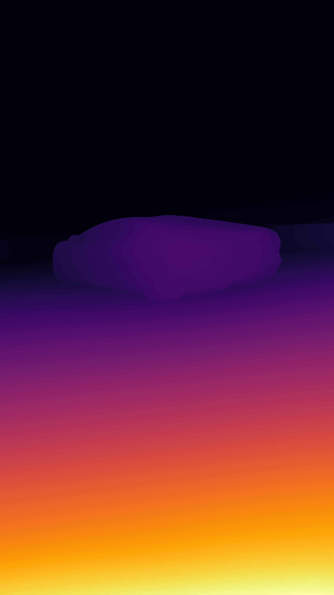
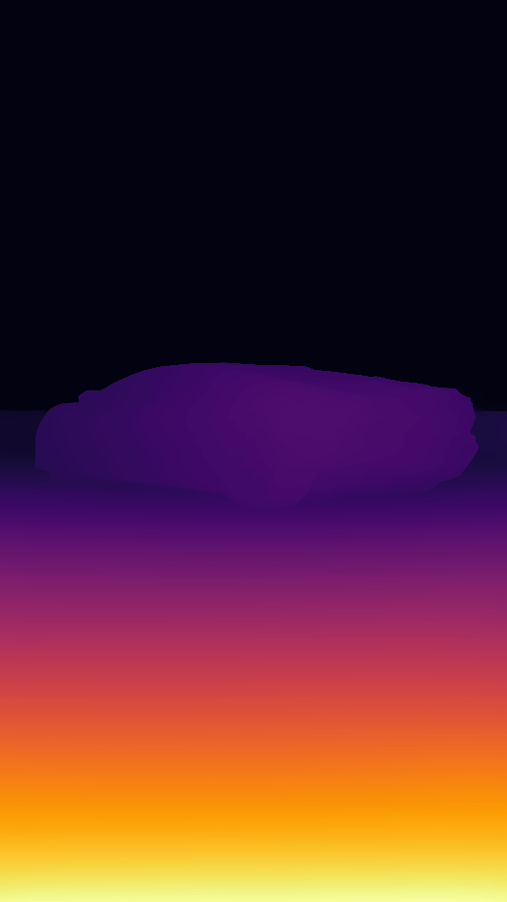
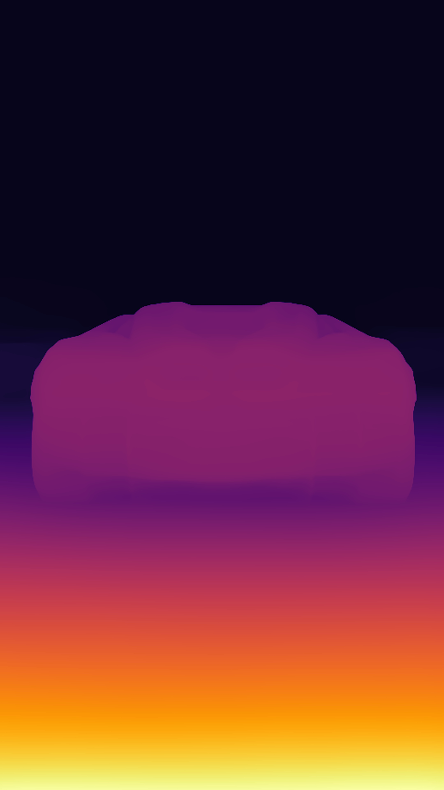
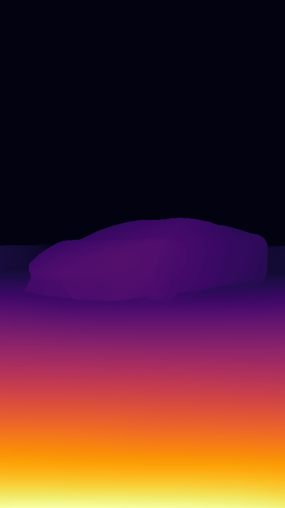
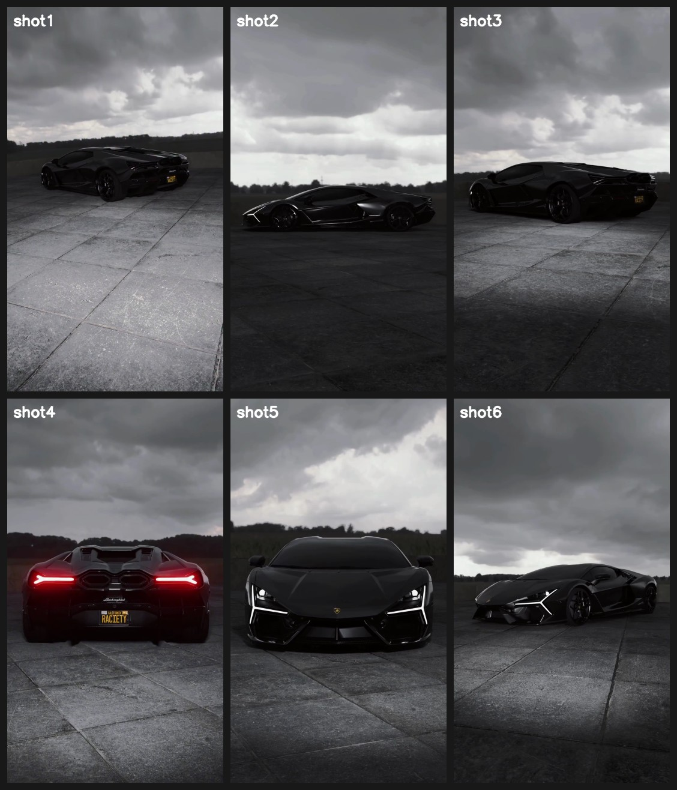
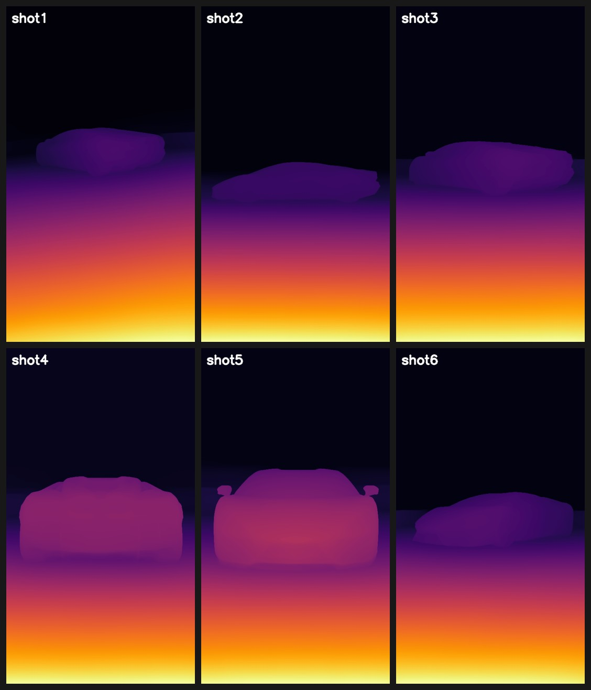

| # | still | depth | time | motion | conf |
|---|---|---|---|---|---|
| 1 |  |
0.00 – 2.73 2.73s / 66f |
tx -15.0
ty +10.0
z 1.000 → 1.060
pan left + tilt down + push-in
|
● 0.09 | |
| 2 | 2.73 – 4.63 1.90s / 46f |
tx -0.1
ty +2.9
z 1.000 → 1.009
push-in
|
● 0.93 | ||
| 3 |  |
4.63 – 7.73 3.10s / 74f |
tx -40.0
ty -2.1
z 1.000 → 0.989
pan left + pull-back
|
● 0.46 | |
| 4 |  |
7.73 – 9.93 2.20s / 53f |
tx -0.6
ty +17.1
z 1.000 → 1.037
tilt down + push-in
|
● 0.70 | |
| 5 | 9.93 – 11.53 1.60s / 38f |
tx -0.1
ty -11.8
z 1.000 → 1.012
tilt up + push-in
|
● 0.78 | ||
| 6 |  |
11.53 – 13.37 1.83s / 44f |
tx -36.9
ty -1.8
z 1.000 → 0.997
pan left
|
● 0.54 |

